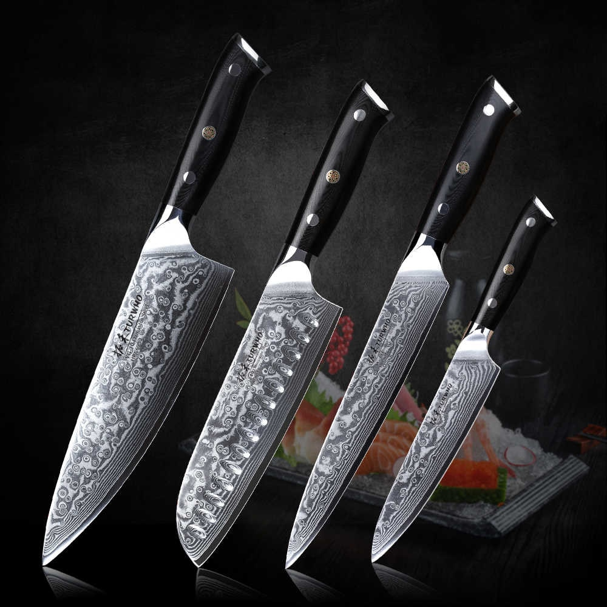
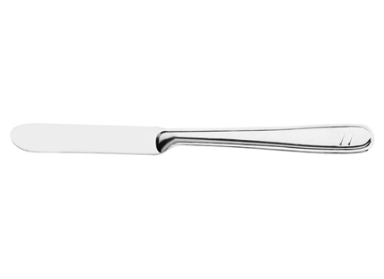
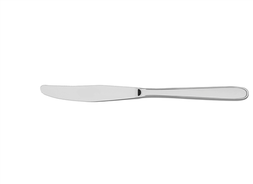
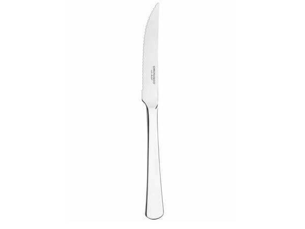
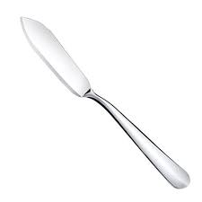
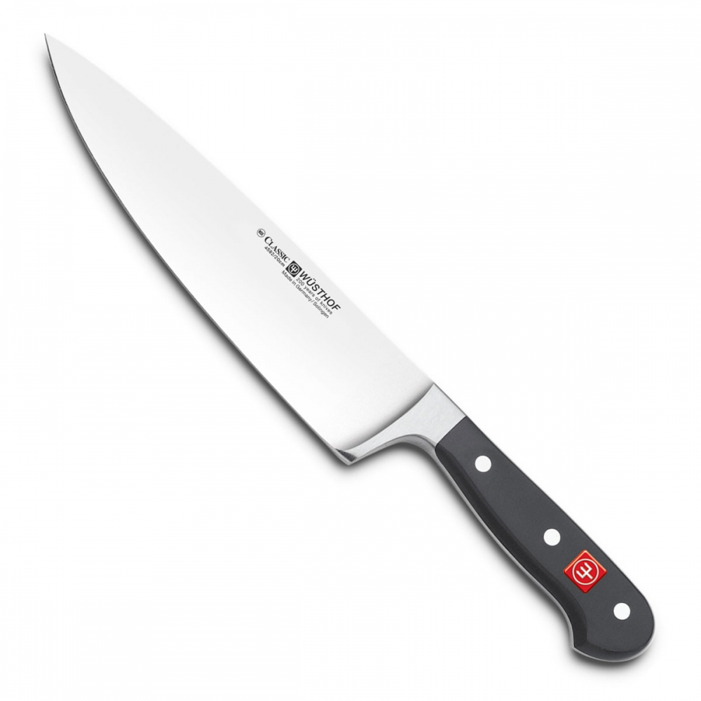
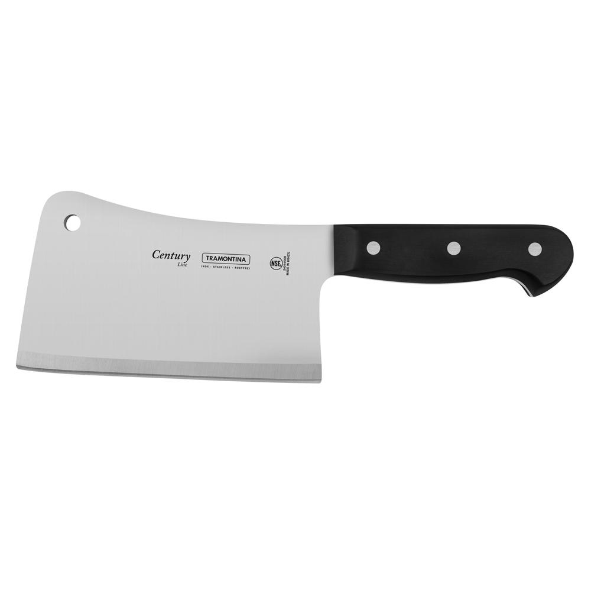
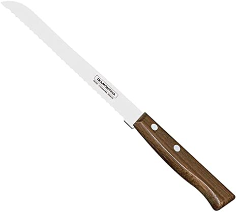

As facas
 Fonte: www.aliexpress.com.brA origem das facas
As facas são um dos talheres mais antigos já registrado senão o mais antigo,esse utensílio é bastante útil e muito importante para o desenvolvimento da humanidade.
Esse instrumento teria surgido na pré-história tendo sido utilizado pelos nossos ancestrais para caçar e se defender,provavelmente era feita com algum pedaço de pedra e com o passar do tempo e com a evolução da humanidade foram utilizados diversos outros materiais e diversas novas utilidades foram dadas as facas.
Faca de manteiga
Fonte: www.madeiramadeira.com.br
Essa é a faca utilizada para passar manteiga nos pães,biscoitos e outros alimentos servidos nos cafés da manhã,tarde ou em qualquer outra ocasião.
Faca de sobremesa
Fonte: www.rebalcomercial.com.br
É a faca destinada ao corte de sobremesas, um pouco parecida com a de manteiga sua única diferença é a presença de uma serrilha que facilita o corte.
Faca de carne comum
Fonte: www.madeiramadeira.com.br
É a faca utilizada para o corte de carnes nas refeições caseiras e na preparação de alimentos, ela é pontiaguda,afiada e também uma das facas mais populares existente.
Faca para peixe
Fonte: www.estrela10.com.br
A parceira do garfo para peixe,essa faca também não possui serrilha semelhante a de manteiga, ela é um pouco mais larga que as outras e sua ponta se divide em dois gumes.
Faca do chefe
Fonte: www.lazershop.com.br
Essa é uma faca de cozinha voltada para o uso profissional, ela mede entre 15 a 30 cm e serve para os mais variados tipos de corte.
Cutelo
Fonte: www.lazershop.com.br
É um tipo de faca mais pesada, existem dois tipos de cutelo: o europeu e o chinês, a diferença entre eles é que o cutelo europeu é mais caro , pesado e destinado ao corte de ossos.
Já o cutelo chinês é mais leve, mais barato e serve para os mais variados tipos de cortes, muito mais util que o primeiro.
Faca serrilhada
Fonte: www.amazon.com.br
Esse tipo é destinado ao corte de pães, com ela conseguimos corta ele sem amassar mas também é usado para corta outras coisas como tomates por exemplo.